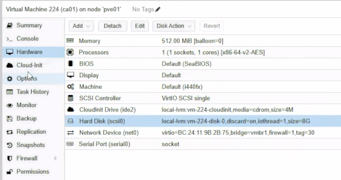
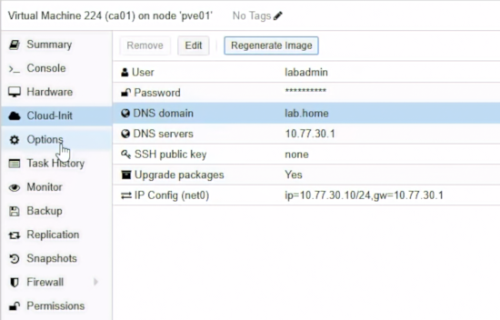
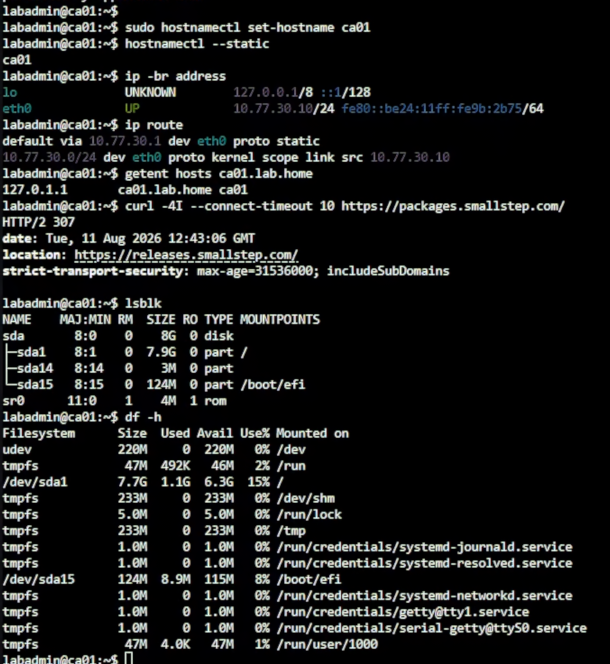
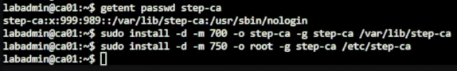
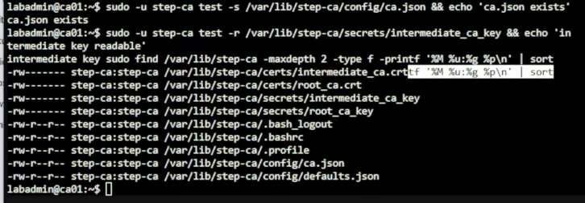
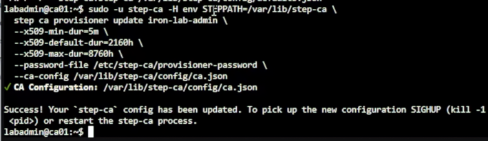
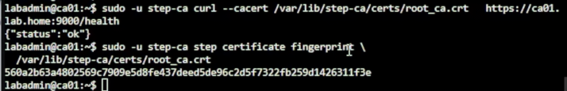
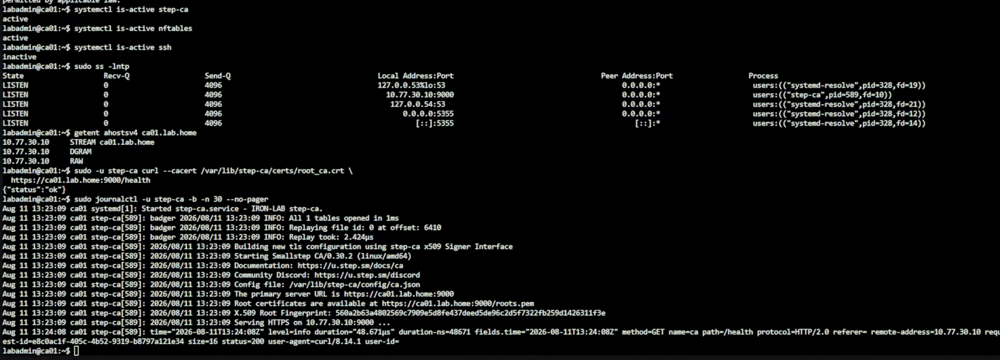

Day 19｜從金鑰到信任鏈：使用 step-ca 為 PostgreSQL HA 建立專用內部 CA
對應文章：Day 19｜從金鑰到信任鏈：使用 step-ca 為 PostgreSQL HA 建立專用內部 CA
本日建立 ca01、初始化 step-ca、完成 nftables Host Firewall，最後簽發一張暫時 Certificate 驗證信任鏈。
完成後的狀態
- ca01 位於 pve01，VMID
224。 - 1 vCPU、512 MiB RAM、8 GiB
local-lvm，不使用 Ceph。 - NIC 接 pve01 的
vmbr1，VLAN Tag30。 - IP
10.77.30.10/24，Gateway 與 DNS 都是10.77.30.1。 step-ca只監聽10.77.30.10:9000。- ca01 nftables 只允許未來的 pg01～pg03 連入 TCP 9000。
- 網路 SSH 關閉，後續只從 PVE Console 管理。
0. 開始前確認
操作位置：PVE Web UI。
- 登入 PVE Cluster 任一節點的 Web UI。
- 左側確認
pve01為 Online。 - 選
pve01→local-lvm→Summary，確認至少還有 8 GiB 可用空間。 - 確認 Day 06 的 Debian 13 Cloud Image Template 可以在 pve01 建立 Full Clone。
- 確認 VLAN 30 的 Gateway
10.77.30.1已能提供 DNS 與對外 HTTPS。
1. 建立 ca01 VM
操作位置：PVE Web UI。
- 左側選 Day 06 的 Debian Template。
- 右上角按
More→Clone。 Target Node選pve01。VM ID填224。Name填ca01。Mode選Full Clone。Target Storage選local-lvm。- 按
Clone，等待 Task 顯示OK。 - 左側選 VM 224
ca01→Hardware。 - 選
Processors→Edit，Sockets 填1、Cores 填1，CPU Type 沿用 Template 的相容模式，按OK。 - 選
Memory→Edit，Memory 填512 MiB，取消 Ballooning，按OK。 - 選
Hard Disk (scsi0)→Disk Action→Resize。 - 若目前磁碟小於 8 GiB，只輸入需要增加的容量，讓最後容量至少為 8 GiB；不要把
8當成最終大小直接重複增加。 - 選
Network Device (net0)→Edit。 - Bridge 選
vmbr1、Model 選VirtIO、VLAN Tag 填30、Firewall 保持勾選，按OK。 - 選
Cloud-Init。 User使用目前 Template 已驗證可登入的labadmin。Password使用本 Lab 的暫時密碼；實際密碼不得寫入文件或提交至 Git。IP Config (net0)按Edit，IPv4 選Static。- IPv4/CIDR 填
10.77.30.10/24，Gateway 填10.77.30.1，按OK。 DNS domain填lab.home，DNS servers填10.77.30.1。- 按
Regenerate Image，等待 Task 顯示OK。 - 到
Options→Start at boot→Edit，勾選後按OK。 - 按
Start，再開啟Console。

圖（一）VM 224 ca01 的硬體配置與接在 vmbr1、標記 VLAN 30 的網卡。

圖（二）Cloud-Init 設定 labadmin、lab.home、DNS 10.77.30.1 與靜態 IP 10.77.30.10/24。
在 ca01 Console 登入後執行：
sudo hostnamectl set-hostname ca01
hostnamectl --static
ip -br address
ip route
getent hosts ca01.lab.home
curl -4I --connect-timeout 10 https://packages.smallstep.com/
lsblk
df -h /

圖（三）初次檢查時，ca01.lab.home 尚解析成 127.0.1.1；接下來修正 Cloud-Init 的 hosts Template。
getent hosts ca01.lab.home 必須解析為 10.77.30.10。若沒有結果，或錯誤解析為 127.0.1.1，代表 Cloud-Init 產生的 /etc/hosts 把 FQDN 指向 Loopback Address。
Proxmox 的 NoCloud User Data 會在開機時設定 manage_etc_hosts: true，它可能覆蓋 Guest OS 內 cloud.cfg.d 的設定。因此不要只修改 /etc/hosts，也不要只新增 manage_etc_hosts: false；本 Lab 直接修改 Cloud-Init 使用的 Debian hosts Template。
先備份並開啟 Template：
sudo cp -a /etc/cloud/templates/hosts.debian.tmpl \
/etc/cloud/templates/hosts.debian.tmpl.before-ca01
sudo nano /etc/cloud/templates/hosts.debian.tmpl
找到：
127.0.1.1 {{fqdn}} {{hostname}}
改成：
10.77.30.10 {{fqdn}} {{hostname}}
保留 Template 內其他 IPv4 與 IPv6 內容，按 Ctrl+O、Enter、Ctrl+X。
接著同步修正目前正在使用的檔案：
sudo nano /etc/hosts
保留 127.0.0.1 localhost 與原有 IPv6 內容，把：
127.0.1.1 ca01.lab.home ca01
改成：
10.77.30.10 ca01.lab.home ca01
在 Nano 按 Ctrl+O、Enter 儲存，再按 Ctrl+X 離開。
重新驗證：
getent ahostsv4 ca01.lab.home
結果中使用的 IPv4 必須是 10.77.30.10，不能是 127.0.1.1。第 10 節重新開機後 Cloud-Init 會依照修改過的 Template 重建 /etc/hosts，屆時還會再次執行這項檢查。
2. 安裝 step CLI、step-ca 與 nftables
操作位置：PVE Web UI → VM 224 ca01 → Console，不是 pve01 的 Shell。
逐行執行：
sudo apt update
sudo apt install -y --no-install-recommends curl gpg ca-certificates nftables
sudo install -d -m 0755 /etc/apt/keyrings
sudo curl -fsSL https://packages.smallstep.com/keys/apt/repo-signing-key.gpg \
-o /etc/apt/keyrings/smallstep.asc
sudo nano /etc/apt/sources.list.d/smallstep.sources
填入：
Types: deb
URIs: https://packages.smallstep.com/stable/debian
Suites: debs
Components: main
Signed-By: /etc/apt/keyrings/smallstep.asc
按 Ctrl+O、Enter、Ctrl+X，再執行：
sudo apt update
apt-cache policy step-cli step-ca
sudo apt install -y step-cli step-ca
step version
step-ca version
apt-cache policy 必須能看到 Candidate。若沒有 Candidate，不要改用不明來源 Binary，先檢查剛建立的 .sources 內容與 apt update 錯誤。
3. 建立 step-ca Service Account 與密碼檔
操作位置：PVE Web UI → VM 224 ca01 → Console，不是 pve01 的 Shell。
建立：
sudo useradd --system --create-home \
--home-dir /var/lib/step-ca \
--shell /usr/sbin/nologin step-ca
確認是否已建立 step-ca Account：
getent passwd step-ca
建立目錄：
sudo install -d -m 700 -o step-ca -g step-ca /var/lib/step-ca
sudo install -d -m 750 -o root -g step-ca /etc/step-ca

圖（四）建立 step-ca 系統帳號，以及 CA 資料與設定目錄。
3.1 建立 CA Key Password File
sudo install -m 640 -o root -g step-ca /dev/null /etc/step-ca/password
sudo nano /etc/step-ca/password
在空白檔案只輸入一行「實際 CA Key Password」。不要加入引號、PASSWORD=、註解或前後空白。這個密碼不可為空。
按 Ctrl+O、Enter、Ctrl+X。
3.2 建立 Provisioner Password File
sudo install -m 600 -o step-ca -g step-ca /dev/null /etc/step-ca/provisioner-password
sudo -u step-ca nano /etc/step-ca/provisioner-password
輸入另一組非空 Password，只放一行。它是 iron-lab-admin Provisioner 用來簽發 Certificate 的密碼，不是 CA Key Password。
按 Ctrl+O、Enter、Ctrl+X。
只檢查檔案存在與大小，不顯示內容：
sudo test -s /etc/step-ca/password && echo 'CA key password file: non-empty'
sudo test -s /etc/step-ca/provisioner-password && echo 'Provisioner password file: non-empty'
sudo stat -c '%U %G %a %s %n' \
/etc/step-ca/password \
/etc/step-ca/provisioner-password
兩個 test -s 都必須輸出 non-empty。若沒有輸出就停止，不要執行初始化，也不要執行 cat 顯示密碼。
4. 初始化 Internal CA
操作位置：PVE Web UI → VM 224 ca01 → Console，不是 pve01 的 Shell。
第一次初始化執行：
sudo -u step-ca -H env STEPPATH=/var/lib/step-ca \
step ca init \
--name 'IRON-LAB Internal CA' \
--deployment-type standalone \
--dns ca01.lab.home \
--address 10.77.30.10:9000 \
--provisioner iron-lab-admin \
--password-file /etc/step-ca/password \
--provisioner-password-file /etc/step-ca/provisioner-password
完成後立刻檢查，不要先建立 systemd Service：
sudo -u step-ca test -s /var/lib/step-ca/config/ca.json && echo 'ca.json exists'
sudo -u step-ca test -r /var/lib/step-ca/secrets/intermediate_ca_key && echo 'intermediate key readable'
sudo find /var/lib/step-ca -maxdepth 2 -type f -printf '%M %u:%g %p\n' | sort

圖（五）確認 ca.json、根憑證、中繼憑證與對應金鑰已建立。
至少要看見：
/var/lib/step-ca/config/ca.json
/var/lib/step-ca/certs/root_ca.crt
/var/lib/step-ca/certs/intermediate_ca.crt
/var/lib/step-ca/secrets/root_ca_key
/var/lib/step-ca/secrets/intermediate_ca_key
若 ca.json exists 沒有出現，停止。不要執行 systemctl enable --now step-ca，因為 Service 不會自行建立缺少的 CA 設定。
5. 調整 Lab Certificate 有效期
操作位置：PVE Web UI → VM 224 ca01 → Console，不是 pve01 的 Shell。
本系列使用 90 天預設有效期，避免尚未完成 Renewal 前隔天過期：
sudo -u step-ca -H env STEPPATH=/var/lib/step-ca \
step ca provisioner update iron-lab-admin \
--x509-min-dur=5m \
--x509-default-dur=2160h \
--x509-max-dur=8760h \
--password-file /etc/step-ca/provisioner-password \
--ca-config /var/lib/step-ca/config/ca.json

圖（六）將 iron-lab-admin 的最短、預設與最長憑證有效期寫入尚未啟動的 CA 設定。
這個 update 是直接修改尚未啟動的 ca.json。step ca provisioner list 是查詢運作中 CA 的線上指令，不支援 --ca-config；等第 6 節啟動 step-ca 後再查詢。
6. 建立 systemd Service
操作位置：PVE Web UI → VM 224 ca01 → Console，不是 pve01 的 Shell。
sudo nano /etc/systemd/system/step-ca.service
填入：
[Unit]
Description=IRON-LAB step-ca
After=network-online.target
Wants=network-online.target
[Service]
Type=simple
User=step-ca
Group=step-ca
Environment=STEPPATH=/var/lib/step-ca
ExecStart=/usr/bin/step-ca /var/lib/step-ca/config/ca.json --password-file /etc/step-ca/password
Restart=on-failure
RestartSec=5s
NoNewPrivileges=true
PrivateTmp=true
ProtectSystem=strict
ReadWritePaths=/var/lib/step-ca
ProtectHome=true
[Install]
WantedBy=multi-user.target
按 Ctrl+O、Enter、Ctrl+X，再依序執行：
sudo chown -R step-ca:step-ca /var/lib/step-ca
sudo systemd-analyze verify /etc/systemd/system/step-ca.service
sudo systemctl daemon-reload
sudo systemctl enable --now step-ca
sleep 2
sudo systemctl is-active step-ca
sudo systemctl status step-ca -l --no-pager
sudo journalctl -u step-ca -b -n 30 --no-pager
sudo ss -lntp | grep ':9000'
systemctl status 剛好顯示 Active 不足以判斷成功，所以要等待兩秒後再查 is-active、Journal 與 Listener。
服務確定正常後，再透過 CA API 列出 Provisioner：
sudo -u step-ca -H env STEPPATH=/var/lib/step-ca \
step ca provisioner list \
--ca-url https://ca01.lab.home:9000 \
--root /var/lib/step-ca/certs/root_ca.crt | \
grep -E '"(type|name|minTLSCertDuration|maxTLSCertDuration|defaultTLSCertDuration)"'
輸出必須包含 iron-lab-admin、JWK 與設定的三組有效期。完整 JSON 含有 encryptedKey，不得加入文件或提交至 Git。
健康檢查：
sudo -u step-ca curl --cacert /var/lib/step-ca/certs/root_ca.crt \
https://ca01.lab.home:9000/health
sudo -u step-ca step certificate fingerprint \
/var/lib/step-ca/certs/root_ca.crt

圖（七）/health 回傳 {"status":"ok"}，並顯示根憑證的 SHA256 Fingerprint。
保存 SHA256 Fingerprint，但不要保存任何 Password。Day 20 三台 PG Bootstrap 時要使用同一個 Fingerprint。
7. 建立 ca01 Host Firewall
操作位置：PVE Web UI → VM 224 ca01 → Console，不是 pve01 的 Shell。
sudo nano /etc/nftables.conf
填入：
#!/usr/sbin/nft -f
flush ruleset
table inet filter {
chain input {
type filter hook input priority filter; policy drop;
iifname "lo" accept
ct state established,related accept
ip saddr { 10.77.30.11, 10.77.30.12, 10.77.30.13 } tcp dport 9000 accept
}
chain forward {
type filter hook forward priority filter; policy drop;
}
chain output {
type filter hook output priority filter; policy drop;
oifname "lo" accept
ct state established,related accept
ip daddr 10.77.30.1 udp dport { 53, 123 } accept
ip daddr 10.77.30.1 tcp dport 53 accept
tcp dport 443 accept
}
}
按 Ctrl+O、Enter、Ctrl+X。先檢查語法，再啟用：
sudo nft --check --file /etc/nftables.conf
sudo systemctl enable --now nftables
sudo nft list ruleset
sudo -u step-ca curl --cacert /var/lib/step-ca/certs/root_ca.crt \
https://ca01.lab.home:9000/health
Health Check 必須在啟用 nftables 後仍成功。
Day 20 建立 pg01～03 後，還要分別從三台測試 TCP 9000，確認 nftables 允許的來源可以到達 ca01。
8. 簽發暫時測試 Certificate
操作位置：PVE Web UI → VM 224 ca01 → Console，不是 pve01 的 Shell。
建立暫存目錄：
sudo -u step-ca install -d -m 700 /var/lib/step-ca/tmp-test
簽發只供本日檢查的 Certificate：
sudo -u step-ca -H env STEPPATH=/var/lib/step-ca \
step ca certificate test.lab.home \
/var/lib/step-ca/tmp-test/test.crt \
/var/lib/step-ca/tmp-test/test.key \
--ca-url https://ca01.lab.home:9000 \
--root /var/lib/step-ca/certs/root_ca.crt \
--provisioner iron-lab-admin \
--provisioner-password-file /etc/step-ca/provisioner-password \
--san test.lab.home \
--not-after=10m
驗證：
sudo -u step-ca step certificate verify \
/var/lib/step-ca/tmp-test/test.crt \
--roots /var/lib/step-ca/certs/root_ca.crt
sudo -u step-ca step certificate inspect \
/var/lib/step-ca/tmp-test/test.crt --short
sudo -u step-ca openssl x509 \
-in /var/lib/step-ca/tmp-test/test.crt \
-noout -subject -issuer -dates -ext subjectAltName
確認 Subject、Issuer、有效期與 SAN 後刪除暫時測試檔。這是本日明確要求移除的可重建測試資料：
sudo rm -f \
/var/lib/step-ca/tmp-test/test.crt \
/var/lib/step-ca/tmp-test/test.key
sudo rmdir /var/lib/step-ca/tmp-test
9. 關閉 ca01 網路 SSH
操作位置：PVE Web UI → VM 224 ca01 → Console，不是 pve01 的 Shell。
先確認 PVE Console 仍可操作，再執行：
sudo systemctl disable --now ssh
sudo systemctl is-enabled ssh
sudo systemctl is-active ssh
sudo ss -lntp
預期 SSH 顯示 Disabled／Inactive，Listener 只保留必要服務，其中 step-ca 為 TCP 9000。
10. 重新開機驗證
操作位置：先在 PVE Web UI → VM 224 ca01 → Console 執行重開機，再使用 PVE Web UI 觀察 VM 狀態。
sudo reboot
等待 Console 回到 Login Prompt，再登入並執行：
systemctl is-active step-ca
systemctl is-active nftables
systemctl is-active ssh
sudo ss -lntp
getent ahostsv4 ca01.lab.home
sudo -u step-ca curl --cacert /var/lib/step-ca/certs/root_ca.crt \
https://ca01.lab.home:9000/health
sudo journalctl -u step-ca -b -n 30 --no-pager

圖（八）重新開機後，確認 step-ca、nftables、TCP 9000、名稱解析與 /health 均正常。
重新開機後 ca01.lab.home 仍必須解析為 10.77.30.10，接著 /health 才應回傳正常結果。